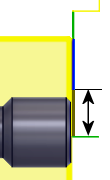

<div id="useReducedFeedrate"><p>最終切削位置の前に送り速度を減速することができます。</p>

<table class="tipTable" cellspacing="10">
<tr>
<td><center></center></td>
<td><center></center></td>
</tr><tr>
<td><center><p><b>無効</b><br>
<em>送り速度変更なし</em></p></center></td>
<td><center><p><b>有効</b><br>
<em>送り速度変更位置</em></p></center></td>
</tr></table>
</div>